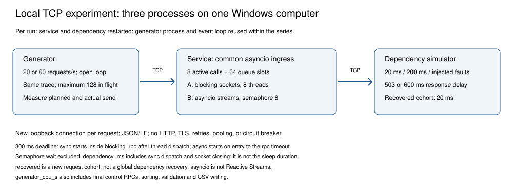
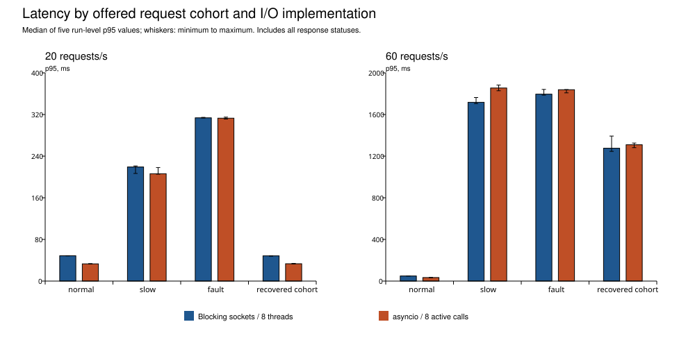
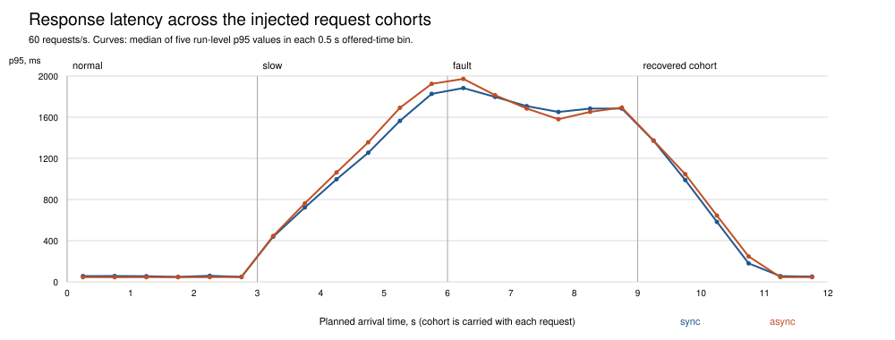

Відтворюваний локальний пілот для обґрунтування експериментальної частини розділу монографії. Власна реалізація; вихідний код магістерської роботи не використано.
Межа інтерпретації: порівняно блокувальні та неблокувальні виклики залежності за однакового обмеження паралельності. Це не тест Reactive Streams і не перевірка виробничого мікросервісного комплексу. Наукову новизну ці дані самі по собі не встановлюють.
Генератор, сервіс і залежність працювали в окремих процесах на одному комп'ютері через TCP loopback. Приймач запитів сервісу спільний; оброблення використовує або пул із 8 потоків і блокувальні сокети, або asyncio із семафором на 8 активних операцій. Черга — до 64 очікувачів. Номінальний бюджет I/O — 300 мс: у sync дедлайн починається всередині blocking_rpc, коли завдання вже виконується в потоці після dispatch; у async — при вході в asyncio.timeout усередині rpc після допуску. Очікування семафора виключено в обох. Dispatch до blocking_rpc не входить до дедлайну sync, але входить до dependency_ms; цей показник також охоплює закриття сокета поза дедлайном. Отже, наскрізні бюджети після допуску не тотожні. Повторних спроб немає.
Відкрите навантаження 20 та 60 запитів/с; по 5 парних повторень із перемішаним порядком. Перед кожним запуском створено нові процеси сервісу та залежності; генератор і його event loop залишаються спільними для всієї серії. Повтори не є повністю незалежними процесними чи системними середовищами. Кожен запуск: чотири фази сліду по 3 с. Параметр затримки залежності — 20 мс, потім 200 мс; у fault половина запитів має результат 503, половина — перевищення таймауту. recovered — нова когорта із заданими 20 мс і успішним результатом залежності, а не глобальна зміна стану залежності. Когорта передається з кожним запитом; запити різних когорт можуть виконуватися одночасно. Глобальне відновлення залежності та час такого відновлення не вимірювалися.
generator_cpu_s включає генерацію навантаження, завершальні контрольні RPC, сортування результатів, перевірки, підготовку полів і запис сирого CSV до моменту кінцевого process_time. Це не чистий CPU генерації запитів; межі цього інтервалу не тотожні інтервалам CPU сервісу й залежності, обчисленим між їхніми контрольними RPC. Висновки про CPU-ефективність на основі таких різних меж не робляться.

Завершено 20 запусків, 9600 виміряних запитів, 100 семантичних проб та 640 запитів прогрівання. Повноту слідів, відповідність бізнес-значень та ліміти перевірено. Неочікуваних статусів: 0. Максимальне запізнення генератора: 32.2 мс.
У таблиці наведено медіану п'яти p95, обчислених окремо для запусків. Діапазон — мінімум–максимум цих п'яти оцінок, не довірчий інтервал. Затримки охоплюють усі статуси; швидка відмова не є успішним виконанням. «429» — сумарні відхилення для п'яти запусків відповідного режиму та фази.
| Запитів/с | Фаза | Режим | Медіана p95, мс | Діапазон p95, мс | Медіана успіхів, % | 429, шт. |
|---|---|---|---|---|---|---|
| 20 | normal | sync | 48.6 | 48.3–48.8 | 100.0 | 0 |
| 20 | normal | async | 33.1 | 32.9–33.4 | 100.0 | 0 |
| 20 | slow | sync | 219.3 | 206.8–221.2 | 100.0 | 0 |
| 20 | slow | async | 206.3 | 205.3–218.1 | 100.0 | 0 |
| 20 | fault | sync | 313.6 | 313.3–314.5 | 0.0 | 0 |
| 20 | fault | async | 313.0 | 311.3–314.9 | 0.0 | 0 |
| 20 | recovered | sync | 48.5 | 48.0–48.5 | 100.0 | 0 |
| 20 | recovered | async | 33.3 | 33.0–33.9 | 100.0 | 0 |
| 60 | normal | sync | 49.0 | 48.5–49.7 | 100.0 | 0 |
| 60 | normal | async | 33.8 | 33.3–34.1 | 100.0 | 0 |
| 60 | slow | sync | 1717.3 | 1705.3–1763.4 | 100.0 | 2 |
| 60 | slow | async | 1854.6 | 1828.2–1882.9 | 97.8 | 18 |
| 60 | fault | sync | 1795.5 | 1786.3–1840.9 | 0.0 | 253 |
| 60 | fault | async | 1838.3 | 1808.1–1839.5 | 0.0 | 263 |
| 60 | recovered | sync | 1276.2 | 1246.0–1392.8 | 90.0 | 91 |
| 60 | recovered | async | 1309.5 | 1281.9–1325.8 | 90.6 | 83 |

Різниці async − sync обчислено всередині кожної пари. Від'ємна різниця означає менший p95 async у цій парі. Описові дані не є тестом статистичної значущості.
| Запитів/с | Фаза | Медіана різниць, мс | Діапазон різниць, мс |
|---|---|---|---|
| 20 | normal | -15.3 | -15.8–-15.2 |
| 20 | slow | -2.1 | -14.9–-0.2 |
| 20 | fault | -0.9 | -2.1–0.5 |
| 20 | recovered | -15.0 | -15.4–-14.6 |
| 60 | normal | -15.0 | -15.9–-15.0 |
| 60 | slow | 133.9 | 64.8–177.6 |
| 60 | fault | 12.7 | -2.6–53.2 |
| 60 | recovered | 20.2 | -83.4–72.8 |

За 60 запитів/с фаза сліду із параметром затримки 200 мс перевищує ідеалізовану місткість 8/0,2 = 40 запитів/с. Тому черга та відхилення є передбачуваними наслідками обмежень, а не самостійним доказом недоліку конкретної моделі I/O. На нову когорту recovered впливає залишок черги попередніх когорт; це не вимірювання глобального відновлення залежності. Для висновку про якість потрібно спільно оцінювати затримку, успіхи та відхилення.
Пілот дає відтворювану методику й локальні вимірювання. Він не доводить універсальної переваги asyncio або потоків; в обох варіантах concurrency=8. Запити всередині запуску залежні, генератор спільний для серії, а кількість повторень мала.
Спільний комп'ютер і фонові програми, Windows-планування, генератор asyncio на тій самій машині, короткі фази, одна межа паралельності, відсутність TLS/HTTP/пулів з'єднань, штучна затримка залежності. Реальна БД, процесорне навантаження та розподілена мережа не досліджувалися. Потрібні окремий генератор, реальна залежність, довші фази, додаткові рівні паралельності та незалежне відтворення перед широкими висновками.
Часові механізми — суттєвий чинник: у цьому Python 3.12 Windows time.monotonic має заявлену роздільність 15,625 мс (GetTickCount64), тоді як perf_counter — 0,0001 мс (QueryPerformanceCounter). asyncio використовує свій годинник для дедлайнів; блокувальний шлях обчислює залишок дедлайну через perf_counter і socket timeout. Отже, номінальні 300 мс задані однаково, але фактичні таймаути не тотожні. Малих різниць p95 не можна безпосередньо приписувати ефективності моделі I/O. Фактичні інтервали збережено в timer_diagnostics.csv, характеристики годинників — ../timing_environment.json. Потрібен окремий контроль цього чинника; налаштування таймерів ОС не змінювалися.
Окремо слід дослідити політики admission control, наскрізний дедлайн разом із чергою і обмежені повтори. Їхня користь або перевага тут не перевірялася.
Поруч із цим звітом: сирі CSV кожного запуску; JSON з конфігурацією, середовищем, порядком запусків, семантичними пробами; summary_by_run_phase.csv, aggregate.csv, paired_differences.csv, diagnostics.csv, validation.json. Повний опис — ../PROTOCOL.txt. Код — ../benchmark.py та ../analyze.py. SVG містять векторні елементи без растрових вставок.
python benchmark.py --config config.json --output results_new python analyze.py --input results_new
benchmark.py потребує Python 3.12+ і лише стандартної бібліотеки. analyze.py для SVG використовує reportlab. Версії зафіксовані. Новий каталог результатів має не існувати.
Документація: asyncio streams; ThreadPoolExecutor. Поведінку конкретного експерименту визначає збережений код і фактична версія Python.